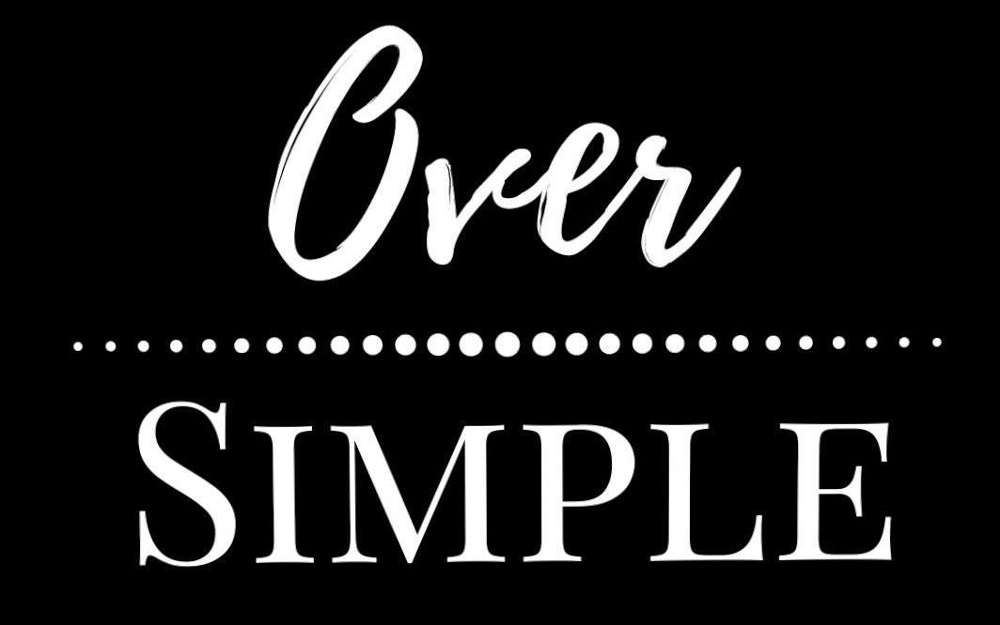
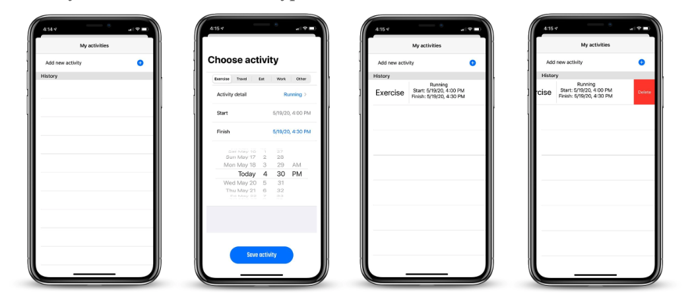

Oversimplified Tech
"For returning "washday" to our lives, Hands Rosling suggest, the washing machine deserves to be called the greatest invention of the Industrial Revolution" -Stephen Pinker.
Early 20th century inventions such as the washing machine and refrigerators have had a profound impact on the society. These inventions allowed for us to have more times in our weeks and be able to liberate us from doing unwanted tasks. Similarily in our modern society, smart phones and applications are focusing in simplifying our daily lives to make us more productive and efficient. In summer of 2020, I cofounded a consumer electronics company named Oversimplified Tech. In the early phases of this company's developmentm, we focused on prototyping and developing different hardware based on AVR architecture. One of our first projects was creating motion sensor LED that were individally addressed using an ATMega328p.
